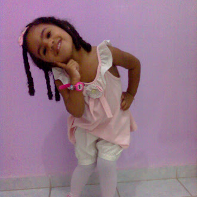
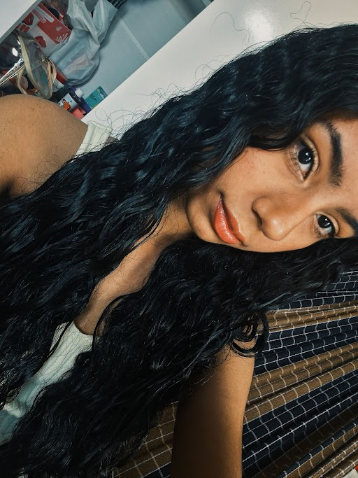

Primeiros anos de vida

Desde pequena sempre fui assim: cheia de pose, sorrisão no rosto e muita energia boa! Essa foto me define super bem, porque mostra que a alegria e o carisma vêm desde cedo. Sempre adorei combinar meus looks, fazer uma graça para a câmera e levar a vida leve. Cresci, mas essa essência divertida e feliz da menininha da foto continua igualzinha dentro de mim!
Na escola

Sempre fui aquela que entra na escola disposta a dar o meu melhor! Sorriso no rosto e muita vontade de aprender, de crescer e de correr atrás dos meus sonhos. Estudar é o meu jeito de construir o futuro, e eu coloco dedicação em cada detalhe!
Hoje em dia

Crescer é aprender a se orgulhar de quem você está se tornando. Hoje, olho para trás com gratidão por tudo o que vivi e olho para frente com muita determinação.
Família
.jpg)
Desde pequena, meu mundo é mais feliz por causa do carinho deles. Essa foto resume perfeitamente a minha infância: protegida, amada e cheia de motivos para sorrir ao lado de quem mais importa.